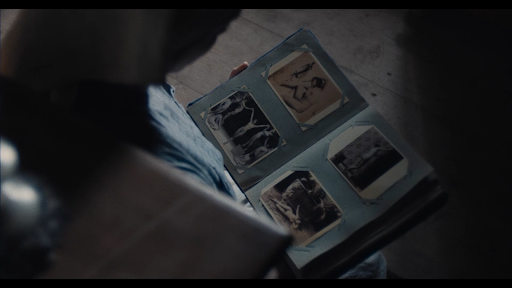
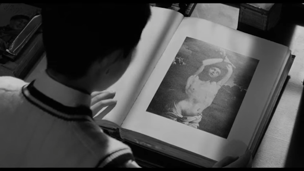

La imagen de un libro abriéndose, más aún en las manos de un niño, representa desde una puerta al mundo hasta una mirada a un abismo que la devuelve de la misma manera. Es un enfrentamiento con lo desconocido y la forja de la futura personalidad adulta.

Este fotograma de Vermiglio (Maura Delpero, Italia, 2024) muestra a Ada, una adolescente que regresa al escondite de su padre, un cajón cerrado con llave. Ahora sin embargo, no busca solo cigarrillos. Aquellas mujeres desnudas posando escultóricamente logran hacer mella en su conciencia, necesita reafirmarse. En Mishima: Una vida en cuatro capítulos (Mishima: A life in four chapters, Paul Schrader, 1985), se representa una escena extraída del autobiográfico libro Confesiones de una máscara (Yukio Mishima, Japón, 1949) donde el propio escritor relata su despertar sexual al encontrarse con la imagen del San Sebastián pintado por Guido Reni (1615). La figura de San Sebastián ha sido reivindicada por otros escritores homosexuales como Federico García Lorca u Oscar Wilde.

La fascinación por el martirio, o mejor dicho, la asimilación del mismo es un elemento común en ambos personajes. Bien como penitencia disuasoria (comer mierda de pollo) o como honorífico ideal a alcanzar (practicarse el harakiri, o llevar una vida monacal). Pero ante todo es la contraparte de lo que representan los fotogramas mostrados, el precio a pagar por ellos, objetos de deseo que remueven la conciencia. El descubrimiento de la sexualidad, concretamente homosexualidad en estos casos se presenta como una forma de cambio tanto propio como ajeno, global. Ambos pertenecen a lugares y contextos que parecen prácticamente impermeables a la vez que lo dejan de ser ante el mundo que les rodea. Ya no volverán a ser los mismos. Tanto la Italia de final de la segunda guerra mundial como el Japón previo a la misma unos diez años atrás viven sus últimos días antes de entrar de lleno en el siglo XX, obligados por la derrota en la contienda.
Hacia el final de la película, al ver a Ada vestida con el hábito de monja, se plantea por un momento la pregunta de si logró vencer a la tentación y a la culpa o unirse a ellas. Poco después, ella en su celda se descubre la cabeza, mostrándose enfrentada contra su reflejo en el cristal de la ventana abierta mientras fuma (pecado asociado al pecado carnal al compartir un mismo lugar físico, el cajón de su padre). Convivir, es probablemente la respuesta. Por su parte, el escritor japonés vio en el mártir a un referente al que emular estética e ideológicamente.